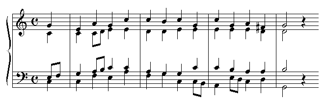

The audio clips that appear in this Encyclopedia were produced using the Hauptwerk virtual pipe organ software, available at www.hauptwerk.co.uk, and kindly donated by its creator, Martin Dyde. This is a wonderful piece of software!
There are two navigation paths to the sound clips: you can look at a stop entry page and see if there are any sound clips for it, or you can go to the Organs appendix to see what organs have been used for samples. In the future I will be adding an appendix that lists the stop entries which have sound clips.
In addition to sound clips of individual stops, the organ pages also include sound clips of multi-stop registrations which are of particular importance.
For each sampled stop, there is a sound clip consisting of a C major arpeggio through the entire compass of the stop. This serves to illustrate what the individual pipes sound like at various pitches.
For 16', 8' and 4' manual stops, there is a sound clip of the first half of the hymn tune �St Anne�. It is played an octave higher on 16' stops. These clips provide an example of what the stop sounds like when used for real music, and provide an �apples-to-apples� comparison between different stops.
I also plan to add short sound clips that are stylistically and historically appropriate for the individual stops.
The sound clips are all in MP3 format, at a bit rate of 160k. Some are mono and some are stereo, depending on the sample sets from which they were produced. If you want higher-quality sound files, you can obtain the same sample sets that I used to create my clips. See the organ pages for more information.
You may have trouble hearing the lowest notes, especially for 16' and 32' flue stops, and especially through small computer speakers. Try a good set of headphones instead.
Contact me first. The web server disk space doesn't come for free, so I won't necessarily use every sound clip that is offered. E-mail me at ed@mewsic.com.
For each stop, record a C major arpeggio through the entire compass of the stop. Play each note for approximately 1 second, with approximately 1/2 second of silence between notes. If you have MIDI capability, you can use the following MIDI file: Arpeggio.mid
For a celeste stop, record the arpeggio twice: once using the celeste stop alone (if it can be drawn alone), and once using the celeste stop and the stop it is intended to be drawn with.
For each 8' and 4' manual stop, record the first 4 bars of the hymn tune "St. Anne", as given below. The tempo should be approximately 85 beats per minute. If you have MIDI capability, you can use the following MIDI file: StAnne.mid
For each 16' manual stop, record the first 4 bars of "St. Anne" played an octave higher.
For each mutation or mixture, record the first 4 bars of "St. Anne" using one or more simple registrations that include the mutation or mixture.
For solo stops, record "St. Anne" using a solo/accompaniment registration. (This clip should be in addition to the "St. Anne" clip in which all 4 parts are played on the solo stop.)
If you are recording an entire organ, record the first 4 bars of "St. Anne" using a variety of typical registrations. For further guidance, refer to the organs already recorded for this Encyclopedia.

You can snail-mail me uncompressed sound files on a CD-ROM or DVD-ROM. Or you can convert the sound files to MP3 files; please use a bit rate of 160k. If the original recording was made in stereo, then keep it in stereo when converting to MP3. You can snail-mail me the MP3's, or put them on a web or FTP site for me to download.
|
Original website compiled by Edward L. Stauff. For educational use only. SoundFiles.html - Last updated 18 March 2005. |
Home Full Index |